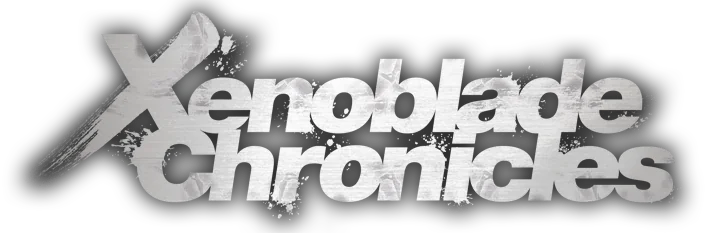
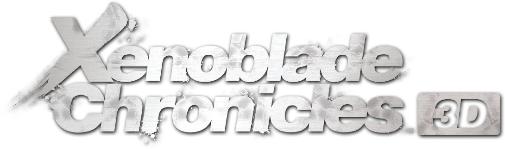
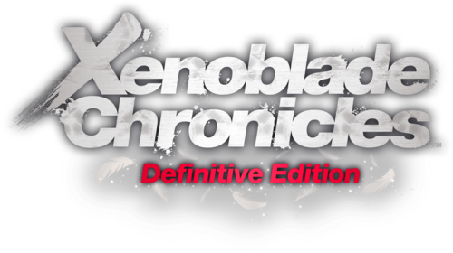
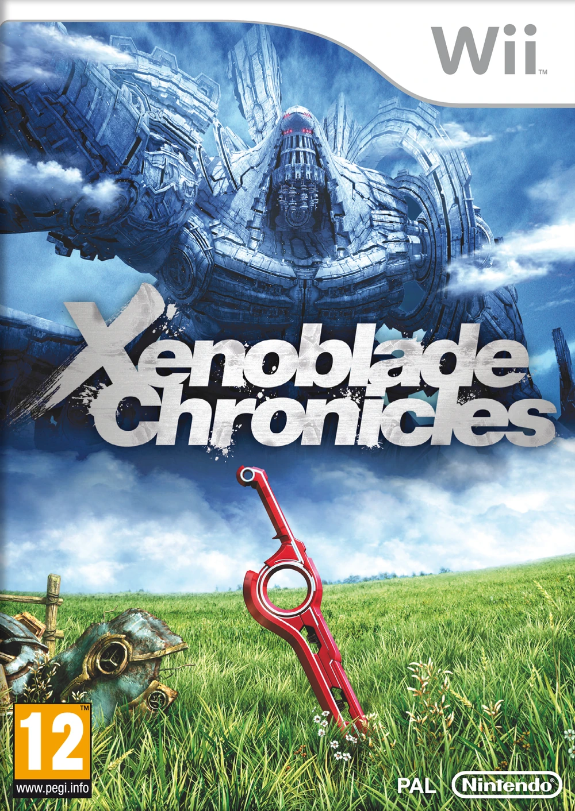
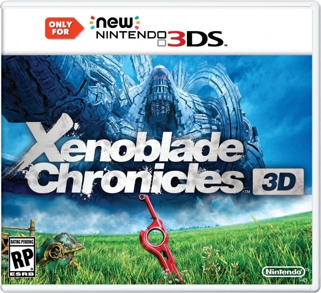
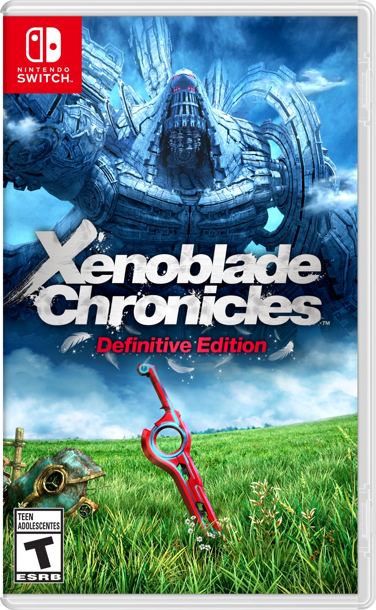

Content
| Categories | |
|---|---|
| Characters | |
| Enemies | |
| Areas |
Overview
The role-playing video game Xenoblade Chronicles, was created by Monolith Soft and released by Nintendo for the Wii. A trailer was made available to the media at E3 2009, marking the game's announcement. In addition to third-person exploration gameplay, the trailer features a futuristic sword-wielding character fighting huge robots and other enemies. To pay tribute to Tetsuya Takahashi, "who poured his soul into making this and who has been working on the Xeno series," the game was renamed from Monado: Beginning of the World to Xenoblade in January 2010. In Japan, the game was launched on June 10, 2010, and in the PAL territories, on August 19, 2011. On April 6, 2012, the game was made available in North America.
Xenoblade Chronicles 1 is the first main entry in the Xenoblade Chronicles trilogy.

Story
Xenoblade Chronicles 3D
In April 2015, Xenoblade Chronicles 3D, a new 3DS port of the game, was made available worldwide. Since Monolith Soft was working on the next Xenoblade game at the time (which came out as Xenoblade Chronicles 2 in 2017), Monster Games, an independent business, co-developed this port. It doesn't work with earlier Nintendo 3DS models.

Xenoblade Chronicles Definitive Edition
At the conclusion of the Nintendo Direct on September 4, 2019, it was revealed that Xenoblade Chronicles: Definitive Edition, a high-definition remaster port, would be available for the Nintendo Switch on May 29, 2020.
With high-definition textures and revamped main characters, the Definitive Edition enhances the game's visuals. While the original recordings are still accessible, the majority of the music tracks were remixed using fresh recordings. To make it easier to use, the user interface has been modified. Collection Mode and amiibo compatibility, two features of the 3DS edition, are absent from the Definitive Edition. It is the first version of Xenoblade Chronicles to be released in new languages, including Traditional Chinese, Simplified Chinese, and Korean.
Xenoblade Chronicles: Future Connected, a brand-new epilogue tale, was included. It revolves around Shulk and Melia on Bionis' shoulder with two of Riki's kids, Kino and Nene. It is not necessary to finish the main plot in order to access this extra narrative, which is available right away.

Media


